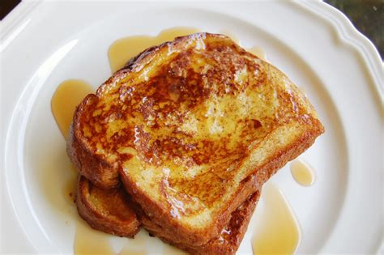

French Toast

French Toast is a classic breakfast item. Made from Toast, Cinnamon, and Egg/s.
Ingredients:
- 3 eggs, beaten.
- 2 teaspoons white sugar.
- 1 teaspoon of milk.
- 1 teapsoon ground cinnamon.
- 1/4 teaspoon of salt.
- 6 slices bread.
Steps:
- Mix beaten eggs, sugar, milk, cinnamon, and salt in a large, shallow bowl.
- Dip bread slices into egg mixture to coat.
- Heat skillet over medium heat. Cook bread in hot skillet until browned completely. 2-3 mins per side.
- Serve while hot, and enjoy.